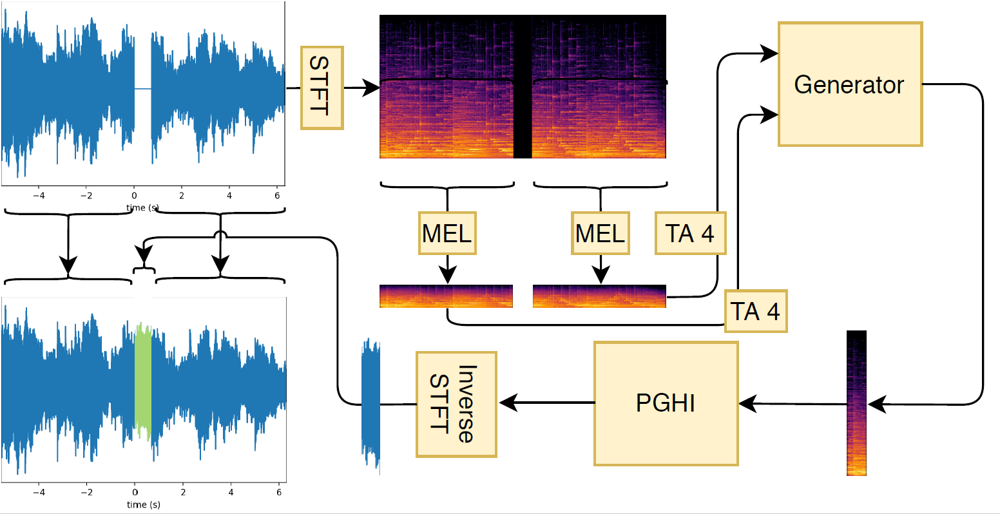

GACELA - A generative adversarial context encoder for long audio inpainting

GACELA targets music inpainting in `long' gaps, i.e., in the range between hundreds of milliseconds and seconds. In this range, there are usually multiple plausible solutions for music inpainting and we consider the task as multi-modal. For example, on a gap where originally a single chord was played, there could be several other chords that fill in the gap while still sounding plausible. For each chord there are even several variations: different amount, intensities or onsets for each note. The multi-modality present at this range needs to be taken into account to model the task. Considering that a standard regression loss models a unique solution, it would lead to an average of the possible solutions and it is a bad fit for the task at this range. To solve this challenge, we model the task with a GAN, as it is able to model the distribution of possible gap replacements instead of producing a single candidate.
An overview of our end-to-end audio generation is presented in the figure above.